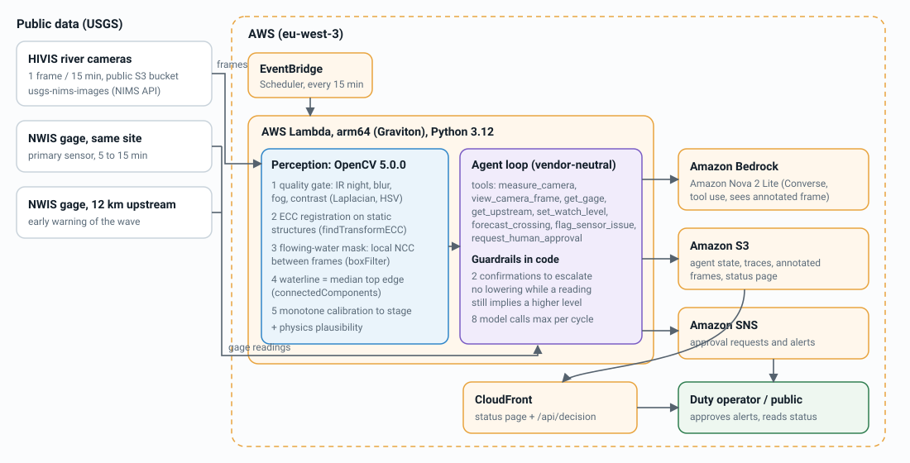
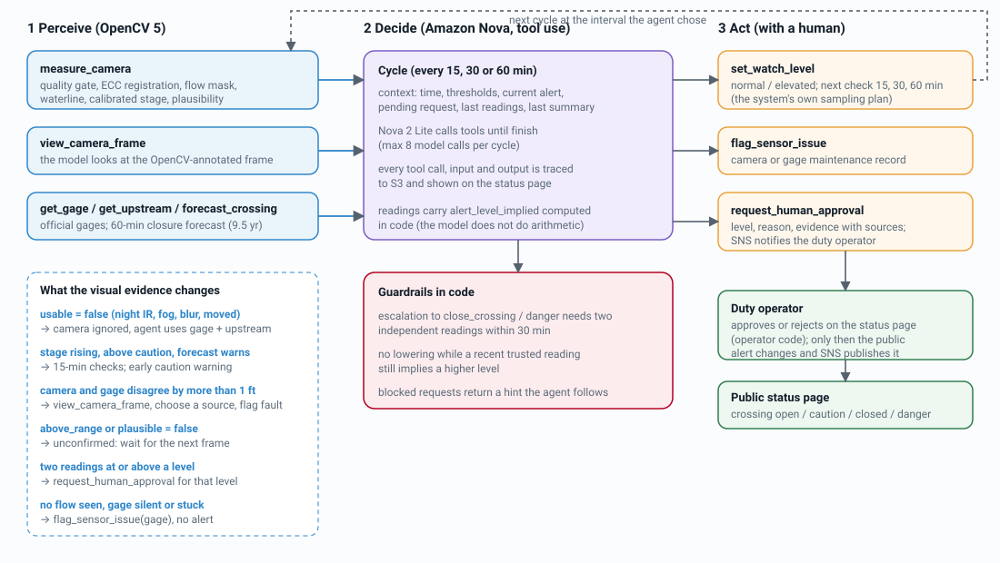

A camera that watches the low-water crossing for you
Over half of flood drownings happen when a vehicle is driven into flood water, and low-water crossings are where it happens. RiverWatch reads the water level from existing USGS river cameras with OpenCV 5, cross-checks it against official gages, and an Amazon Nova agent decides what to do next: look more often, flag a broken sensor, or ask a human to close the crossing. Everything runs on AWS (Lambda on Graviton, S3, CloudFront, Bedrock, SNS).
Live: Cowhouse Creek at W Range Rd, Fort Hood, TX
loading…- Forecast, next 60 min
- –
- Agent watch level
- –
- Next check
- –
- Last cycle
- –
Waiting for the duty operator
Last 12 hours
Agent trace of the last cycle
Replay: the 2 October 2026 flash flood
real frames and gage data, agent re-run on a simulated clockThe camera calibration used here was fitted without this day, so the flood is unseen. Every tool only sees data up to the simulated time. The duty operator is simulated and approves 10 minutes after each request.
- Official gage
- –
- Camera (OpenCV 5)
- –
- Forecast, next 60 min
- –
- Next check chosen by agent
- –
Evaluation
camera stage vs. official USGS gage, 2026-09-09 to 2026-10-20
Forecast: warning before the water arrives
A small gradient-boosted model plus a physical rule on the upstream rise, trained on 9.5 years of both gages (46 closures since 2017) and evaluated leave-one-year-out. The gage alone warns 0 minutes ahead.


Where it fails
How it works


- Perceive (OpenCV 5). Quality gate (infrared night mode, blur, fog, contrast), ECC registration against the calibrated view using only static structures, flowing-water mask from local normalized cross-correlation between frames 15 minutes apart, waterline as the median top edge of the water body across the channel, monotone calibration to stage.
- Decide (Amazon Nova 2 Lite). The agent reads the camera, can look at the annotated frame itself, compares the official gage and the upstream gage, and chooses the next check interval.
- Act, with a human in the loop. Raising the public alert needs an operator. Guardrails in code: two independent confirmations to escalate, no lowering while a recent reading still implies a higher level.
Data: USGS HIVIS cameras and NWIS gages (public domain). Thresholds: NWS "Turn Around, Don't Drown" guidance (6 inches of fast water can knock over an adult, 12 inches can carry away most cars, 2 feet can carry away SUVs and trucks).